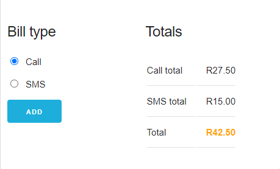

DOM Widgets Intro

I learned that the DOM is about the browser, what people can see and do with an
application. So we use the DOM to gather and display information from end users.
We
have
many DOM elements such as textboxes, radio buttons, checkboxes, div elements and
other
html tags. I learned about how the DOM loads and how to build a DOM widget.